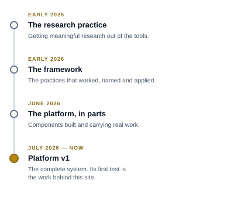

The platform only makes sense against the promises the research method makes. There are six: the analysis holds steady across days and many sessions; hundreds of sources are pulled and reconciled, from more than one tool; public web, academic, and customer sources come under one set of rules; the work keeps a versioned record with an audit trail; every finding runs through a verification loop until it earns confidence; and thin evidence is named, never hidden. A chat window keeps none of these promises. The platform is what keeps all six.
Where it comes from

I spent eighteen months learning to get meaningful research out of LLMs. Six months ago I organized the practices that worked into a framework and began applying it to all of my work. Over the past weeks I built the framework's parts into working components. The complete platform reaches version 1 this month, July 2026. Its first test is the work behind this site.
Each part followed the same path: done by hand, then written down, then built so it does not have to be done by hand again. The papers coming to this page describe the result.
What the work demands
What it is
There is no bespoke software product at the center of this. The platform is Claude Cowork — Anthropic's desktop agent — plus the structures assembled around it: a file system that holds durable state, a task tracker that holds open decisions, a code repository that controls the route from draft to published, a session-health gauge both the analyst and the agent can read, and a set of written procedures the agent loads and follows. None of the components is exotic. The assembly is the work, and every operating rule in it traces to a session where its absence cost something.
Why it matters
The model supplies reach. The analyst supplies judgment. The platform is what lets the two operate together for weeks without losing the thread: findings stay recoverable, decisions stay recorded, and the analysis does not reset each time a new session opens. Two of its practices — the structured session close, and a charter that sets the rules, vocabulary, and decisions for one engagement — I have not found published anywhere else.
The case for working this way is already on this site: When Even the Best Prompt Isn't Enough makes the argument that sustained work needs a framework behind it.
What is coming
What the work demands, and what it took to build — the platform paper, in draft now: the six promises above and the assembly that keeps them, written for both the business and the technical reader.
The full design — the system as one document: the two working surfaces, the state store, the file contract, and the skill and lifecycle layer.
Claude Project setup fundamentals — the account-level and project-level setup the work stands on.
One system in detail — a single component opened up and shown working, end to end.